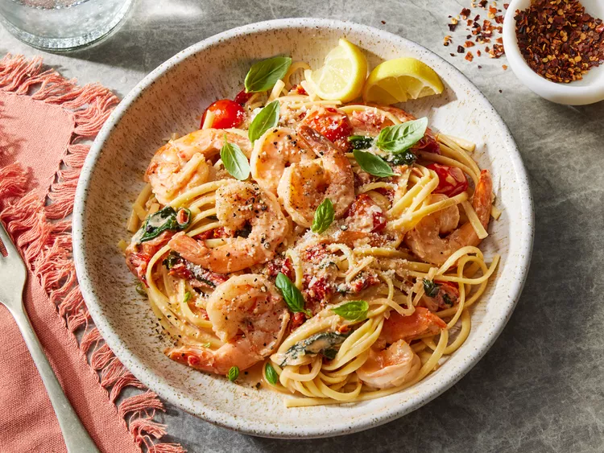

Tuscan Butter Shrimp
⭐⭐⭐⭐⭐
4.6 (220 reviews)

Ingredients
1 pound large shrimp, peeled and deveined
Salt and pepper to taste
2 tablespoons olive oil
3 cloves garlic, minced
1/2 cup heavy cream
1/4 cup chicken broth
1/2 cup sun-dried tomatoes, chopped
1/4 cup grated Parmesan cheese
2 cups fresh spinach
1 tablespoon fresh basil, chopped
2 tablespoons unsalted butter
Directions
Season shrimp with salt and pepper on both sides.
Heat olive oil in a large skillet over medium heat. Cook shrimp until pink and cooked through, about 2 minutes per side. Remove and set aside.
In the same skillet, add minced garlic and sauté until fragrant.
Add butter and let it melt, then pour in heavy cream and chicken broth, stirring to combine.
Add sun-dried tomatoes and Parmesan cheese, and let the sauce simmer until slightly thickened.
Stir in spinach and cook until wilted.
Return shrimp to the skillet, spooning the sauce over the top. Cook until the shrimp is heated through.
Garnish with fresh basil before serving.
Nutrition Facts
Calories: 500 | Protein: 35g | Carbs: 10g | Fat: 35g